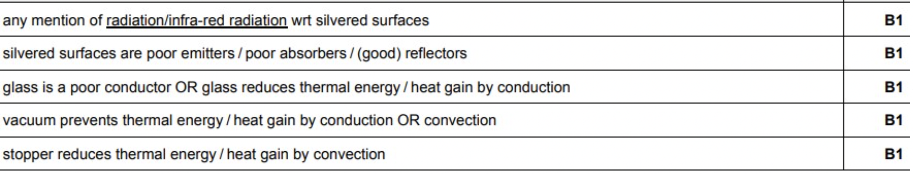

06-16-2021 ~ Girvin Djapardi
Understanding Physics' MS

When revising, it is important to understand that there is absolutely no point in doing 2 decades worth of past papers without checking your answers. You simply do not know whether you are right or wrong.
I like to emphasize that mark schemes can be more than just a document that just helps you check your answers. It gives you an idea of what is being expected from you, how to structure your arguments and how to efficiently answer the questions.
Take this as an example:
Here, as seen from the picture, 5 marks are awarded. A reckless tendency would be to start jotting down what comes first to mind. If your handwriting is small and tidy, then that is fine. But if your handwriting is like mine (large and legible at best), it is best to stop and think for a moment regarding the structure of your answer. A key tip is to think about the most efficient way to list the main points with the least amount of words possible.
This is because IGCSE does not take into account answers outside of the lines allocated. Hence, structuring is important. Here, a logical way of starting this would be to look at the 3 ways thermal energy is being transferred and which feature reduces each.
Here is what the mark scheme expects:

Notice how marks are awarded for direct and relevant information. There is no point in beating around the bush or providing irrelevant information as this takes up space and provides you zero marks.
An important thing to also remember is that for numerical answers, the safest option is to provide your answer in the least amount of significant figures given by the question. What does this mean?
Take an example of this question ( I made this up).
A lorry of mass 23750kg has a velocity of 5m/s. It speeds up for x seconds and achieves a final velocity of 32.8m/s. The force exerted is 289 000N. Calculate for x.
We are given 4 numerical values with varying accuracy. When calculating, always use the exact values for each step but in the last step when displaying the answer, estimate it to the number of significant figures the least accurate numerical value possesses. For this example, it would be its initial velocity which has only 1 significant figure.
Here, x would be 2.28460...
Estimating it to 1s.f, the value displayed would be 2.
As far as marks are involved. displaying it to 3 significant figures or other estimations would lose you roughly 1 to 3 marks for the entire exam. However, I feel the need to include this as losing marks this way is incredibly silly.